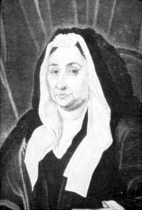

|
by Stefan Bielinski Elsie Staats was born during the late 1650s, the daughter of Beverwyck physician Abraham Staats and his wife, Catharina Jochems. As a child of one of the community's few professionals, Elsie grew up alongside  other first generation Americans - the children of Albany's founders. About 1677, she married Johannes Wendell - a widower and son of an Albany fur trading family. The first of their nine children was born in 1678. Their State Street home was noted on the census of householders taken in 1679. Wife of one of a prominent and successful businessman, Elsie's life was dealt a crushing blow by the untimely death of her husband early in 1692. A widow with eleven living children including an infant and two stepdaughters from Wendell's first marriage, Elsie was not yet forty years old. She was named principal beneficiary and executor of Wendell's estate. But that inheritance was jeopardized when, in April 1695, she married Johannes Schuyler, the thirty-six-year-old youngest son of Albany foremost family. Eight months later, her son Philip Schuyler was baptized in the Albany Dutch church. Their household with eleven children stood out on the city census of 1697. By 1704, she had given birth to three more Schuyler children. Her union with a considerably younger Johannes Schuyler stands out among early Albany marriages. However, it endured for forty-two years. Elsie's family was inordinately large and quite complex. During the 1700s, it settled into the landmark Schuyler House in the heart of an emerging Albany. Her Wendell stepdaughters had passed on. The Wendell children were reaching maturity and taking their places throughout the region and beyond. Now middle-aged, prosperous Johannes Schuyler was appointed mayor of Albany in 1703 and elected to the provincial Assembly in 1710. He was also the patriarch and patron of a large city-based family. Attended by many servants, Elsie shared her husband's business interests and also his affinity for the Albany church - where she had witnessed two dozen baptisms by 1731. Perhaps living into her eighties, Elsie Staats Wendell Schuyler died in June 1737 and was buried from the Albany Dutch church with the notation "wife of Johannes Schuyler." She was the mother of at least fifteen Albany children and the stepmother of two others.
This portrait of a matronly Elsie Staats has been sewn together with a portrait of her second husband. It has been widely reproduced and is in the collection of the New-York Historical Society This unusual double painting was painted prior to Elsie’s death in 1737. Both portraits probably were done by Scottish-born artist John Watson. In 1741, the double portrait was noted in Johannes Schuyler's will filed in 1742.
|
{kind=link}